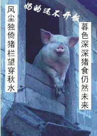

猪猡战纪 珠无能篇
#1 猪猡战纪 珠无能篇 作者：炫飞柳扶风 发表时间：2008-8-2 12:29:21
我是珠无能。我坐在魔猪族高大威严的大殿里，面前是长长的阶梯，装饰得美仑美幻的皇宫。我是这里的主宰，我生活的很快乐，只要不去想过去的话。
我的心空空的，好象少了什么东西。过去这两个字眼，深深的刺伤了我。我还记得，我刚出生的时候，我的猪爸爸笑的眼睛都弯成斜月了。我的兄弟姐妹们紧紧的挨在一起，爸爸挨个给我们起名字。有一只总在不停的嚎叫，爸爸叫它闹闹。说闹闹别闹。还有一只喜欢吃豆子，爸爸叫它豆豆。我的哥哥，叫猪2。有一个名字很长，爸爸叫他猪123。之所以没叫猪1234，我想那是爸爸只认识3的缘故。
我们刚出生不久，爸爸就去屠宰场工作了，听妈妈说，出了生产事故。后来就没回来。妈妈一个人把我们带大，很辛苦。后来有个群招人，妈妈就把他们脸上扑点粉，头发梳成中分，女猪就绑俩小辫子，偷偷送他们去了。回来的时候，妈妈走一路，哭一路。
我是最小的，妈妈没舍得都送走，把我留下来了。我家的房子很好，出门就是猪槽。妈妈说，这是别的猪都没享受过的待遇。妈妈每天出去做工，把我一个人留在家里。有天已经很晚了，妈妈还没送饭给我，我趴在窗户上，努力睁大我的小眼睛，仔细辩识远方妈妈的身影。
我的邻居是个蜘蛛，它为了帮助我找到妈妈，把我的照片发到蜘蛛网上了。据说越传越有名了。我妈妈说，连她也没想到我是猪家族这么有名的孩子。于是她开始更加努力的工作，供我读猪族小学，大学（我们没有初中，太复杂的教育制度会让猪们看不懂。）我在哼唧大学获得了学士学位，荣归故里。
当我到家的时候，我的妈妈已经很老了，她开始怀念为了生活所迫，不得以送出的孩子。可是妈妈的脑筋不很管用（这是我们家族的通病）她只记得我兄弟姐妹的4个名字。能做到这样，已经很了不起了。因为对我们来说，认识4这个字已经很值得骄傲了。
妈妈临终前我始终没有联系到我的兄弟姐妹。时间已经很久，没有任何线索可以找到。在妈妈的坟墓前我坐了很久。我想我要完成妈妈的遗愿，不要妈妈遗憾的走。后来我开始到处寻找，始终没有他们的消息。后来就没寻找过。
后来，我开始上网了，在五子棋室里恋爱了，我们天天发喇叭，放烟花，后来有天我的她消失了，再也没回来。关于这个的故事，我想下一集会有预告的。后来很偶然的消息，偶知道了偶爸爸生产事故的原因。。。也知道了，为什么屠宰场是我们猪禁止随便进入的地方。。
在偶疯狂的那段日子里，偶砍了很多高手区的人，泡掉很多MM。刷了无数的喇叭，在高分区的厕所写了很多骂人的话。比如你大爷的，劳资,靠。后来偶被人叫做连珠大魔王，偶开始拉帮结派，先后成立吹牛派，忽悠派，建立魔猪帝国。
后来，偶的手下告诉偶，她好象听过炫飞城中，有人呼唤过豆猪，闹猪。但是这个时候偶已经和人类世界彻底决裂，偶的名字在他们看来就是恐怖的象征。人类于偶是不死不休的仇敌。结局已经注定，我的兄弟姐妹们，我们已经成为了刀剑相对的仇敌。
我看着我的部下，珠有房，珠有粮，珠有食等人，9大战将，和我一起打天下的部将。他们已经做好了出征的准备。战争，就要开始。
第一次攻城，珠有房，珠有粮，珠有食3将出马，轻轻松松干掉对方3个城卫。简单开个明星局，被人连消带打，满脸开花，挂了。菜菜虫以斜月闻名，遇到本组高手，被人踩了，血肉模糊。鸭蛋最为神勇，搞个瑞星出来，在中了N刀之后依然屹立着。这3个城卫也算一等一的高手，但是在我魔族大将猪威之下，连50回合都撑不过去。因为这是我们猪族有名的3贱客，号称超级无敌神勇威猛雷霆霹雳吸力哗啦叽里呱啦之战神猪。
一声令下，我军阻击手进入战场。后事如何，请看下集预告。炫飞城，我来了，在连珠的战场上，我们，谁将是最后的胜利者？

珠无能少年时照片
［ 有志青年 于 2008-8-3 7:03:53 时奖励此帖[金币加 20 威望加1］
#2 Re:猪猡战纪 珠无能篇 作者：高了搞 发表时间：2008-8-2 16:59:54
 太牛了...
太牛了...
#3 Re:猪猡战纪 珠无能篇 作者：洛玫青缨 发表时间：2008-8-3 20:57:24
- -不会把。。。虫子和鸭蛋挂这么快。。。#4 Re:猪猡战纪 珠无能篇 作者：雨一直下 发表时间：2008-8-5 11:25:11
8月30日,决战大魔王(擂台赛)将拉开战幕,急报频传,狼烟四起,炫飞的勇士们快快报名(群空间跟贴或与各群管理联系),华山论剑,一试高低!!#5 Re:猪猡战纪 珠无能篇 作者：洛玫青缨 发表时间：2008-8-5 22:53:16
偶报名~~~~~~~~~~~